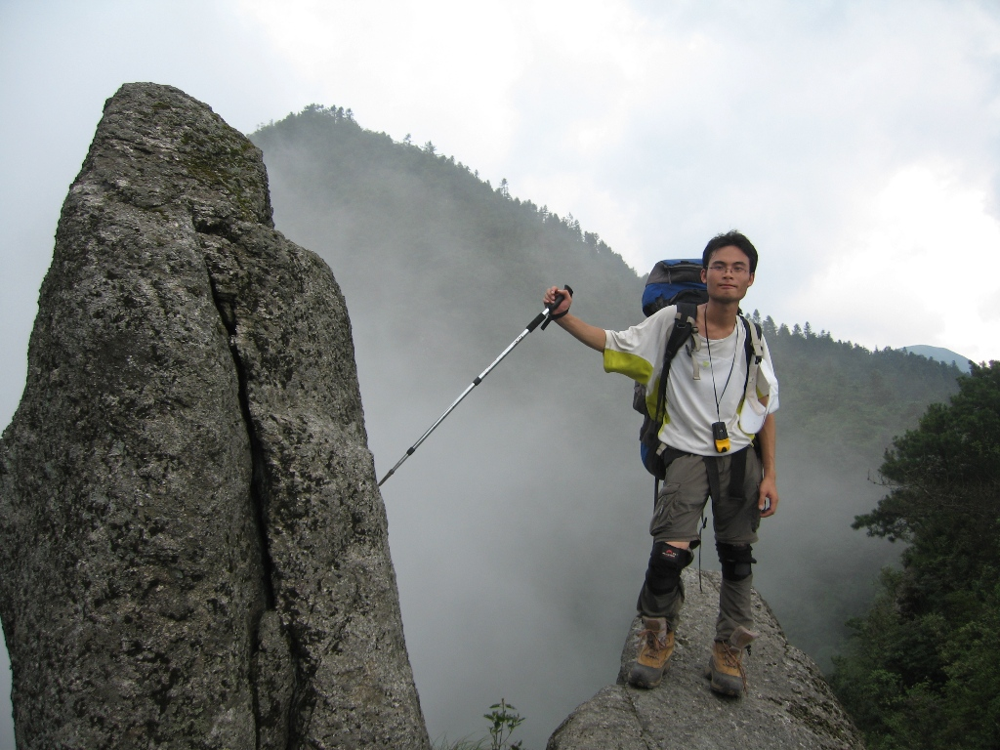

发信人: yanhao (一个人~), 信区: outdoor
标 题: 我为你翻山越岭——初识武功
发信站: 饮水思源 (2010年07月28日00:16:32 星期三)
武功之行恍惚也过去要半个月了，回到上海，回到交大，又回到了睡觉、电脑、吃饭再到
睡觉的循环中，偶尔走出校园，徘徊于五号线、一号线、七号线、闵莘线，也习惯了拥挤
，习惯了嘈杂中独守一片自己的空间，泛泛的听着站点报站，空空的思绪里空空的念头，
一抬头，也就到站了…只是蓦然仰视天空的时候，只是在寝室里淋着带着白天暑气的淋浴
的时候，会想起那块用脚步丈量过的土地，会怀念那方天空…
screen.width - 200){this.width = screen.width - 200}">
从萍乡火车站到杨家岭，包车一个多小时的车程，没有直通的公交、班车，杨家岭公路的
尽头，也就是上山的路，横亘在眼前的群山，山谷而上，明显的石阶相连，隐约的山涧，
第一天的行走，通宵硬座的困乏还没有淡去，最重的包和最差的精神，所幸是最简单的路
线，密林里穿来穿去，清泉补水，隐匿着的瀑布时隐时现，颇为自得~强度不小，费体不少
，泉涌出的汗被山风一吹，也便清清爽爽地释去行前的羁绊，完完全全的享受行走。遇到
一个打猎下山的山人，那把猎枪还是违禁物品吧，简单问了前程，继续前行。中途经过一
座废弃了的木屋，几个废气罐默默讲述着不知何时的驴友故事，yangzihao说它阴森诡异，
我们也就加紧了脚步。
从乱木丛中走出，也就走上了往羊狮幕的大道，路牌上清楚的标识省去了些许顾虑，不久
便到了一处尚未完工的水泥房子前，以为是半升米冲，斑驳的墙上画着方向，往羊狮幕去
。便将包下在这里，轻装羊狮幕，待走到真正的半升米冲时才知道，那是个待建的收费处
，不知多久以后也要收门票了…也就在这未建成的地方开始第一天的晚餐，屋后的山泉清
清冽冽，意外看到的娃娃鱼给第一天画下了完美的句号，逗着它完，只是羞涩的往石缝里
钻，总共看到了两只，意满心足~
screen.width - 200){this.width = screen.width - 200}">
而第一天的篝火也顺利地生起来了，微亮的天光中火的微红，四个人忙碌的准备晚餐，四
周的声响唯虫鸣，唯鸟啾，唯山风树飒，如今想来，一生如此，足矣…
screen.width - 200){this.width = screen.width - 200}">
晚饭后一小段夜路，到了半升米冲扎营，9点半睡，一夜无话。早起往羊狮幕景区，按着山
人指的路去看冲天石笋，似乎不曾寻着，许是弯拐得不够大，不够深，而眼前的石笋却已
惊叹，依山而起，突兀而出，山石的灰绿夹杂着孤松的苍劲，独立于天地。而倏然出现的
鹰，更在心中深深烙下这片天地的烙印，第一次亲身看到鹰的翱翔与俯冲，不扇双翅，借
着云气上升、停留、急速俯冲而悠然盘旋，从容中昭示着它的存在，巡视这方天地，巡视
自己的天地！四人已然震撼…
screen.width - 200){this.width = screen.width - 200}">
而据山人所说，冲天石笋，平地而起，独笋直上数百丈，一柱擎天，又该有怎样的巍然霸
气，蔚然雄风？也只待下回了…
screen.width - 200){this.width = screen.width - 200}">
screen.width - 200){this.width = screen.width - 200}">
screen.width - 200){this.width = screen.width - 200}">
好像海豚啊~~~
screen.width - 200){this.width = screen.width - 200}">
screen.width - 200){this.width = screen.width - 200}">
 screen.width - 200){this.width = screen.width - 200}">
--
※ 来源:·饮水思源 bbs.sjtu.edu.cn·[FROM: 59.78.57.99]
※ 修改标题和内容:·yanhao 于 07月28日08:30:08 修改本文·[FROM: 111.186.50.2]
※ 修改内容:·yanhao 于 07月28日08:36:42 修改本文·[FROM: 111.186.50.2]
※ 修改内容:·yanhao 于 07月28日16:02:56 修改本文·[FROM: 111.186.50.2]
|